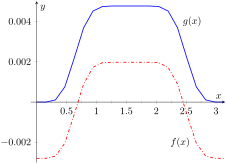

Functions involving trigonometric functions are useful as they are good at describing periodic behavior. This section describes several techniques for finding antiderivatives of certain combinations of trigonometric functions.
Subsection6.3.1Integrals of the form \(\int \sin^m(x) \cos^n(x) \, dx\)
In learning the technique of Substitution, we saw the integral \(\int \sin(x) \cos(x) \, dx\) in Example 6.1.6. The integration was not difficult, and one could easily evaluate the indefinite integral by letting \(u=\sin(x)\) or by letting \(u = \cos(x)\text{.}\) This integral is easy since the power of both sine and cosine is 1.
We generalize this integral and consider integrals of the form \(\int \sin^m(x) \cos^n(x) \, dx\text{,}\) where \(m,n\) are nonnegative integers. Our strategy for evaluating these integrals is to use the identity \(\cos^2(x) +\sin^2(x) =1\) to convert high powers of one trigonometric function into the other, leaving a single sine or cosine term in the integrand. Let's see an example of how this technique works.
Example6.3.1.Integrating powers of sine and cosine.
But what if, for some reason, we wanted to let \(u=\cos(x)\) instead? Unfortunately, we have \(\sin^3(x)\) as part of our integrand, not just \(\sin(x)\text{.}\) The solution to this problem is to replace some of our powers of sine (two of them to be exact) with expressions that involve cosine. We will use the Pythagorean Identity \(\sin^2(x)=1-\cos^2(x)\text{.}\)
This looks like a very different answer, so you might wonder if we went wrong somewhere. But in fact, the two answers are equivalent, in the sense that they differ by a constant! (So the “\(+C\)” is different in each case, if you like.) Notice that
where \(u = \cos(x)\) and \(du = -\sin(x) \, dx\text{.}\)
If \(n\) is odd, then using substitutions similar to that outlined above (replacing all of the even powers of \(cosine\) using a Pythagorean identity) we have:
Our integral is now \(\ds \int (1-\cos^2(x) )^2\cos^8(x) \sin(x) \, dx\text{.}\) Let \(u = \cos(x)\text{,}\) hence \(du = -\sin(x) \, dx\text{.}\) Making the substitution and expanding the integrand gives
The powers of both the sine and cosine terms are odd, therefore we can apply the techniques of Key Idea 6.3.2 to either power. We choose to work with the power of the cosine term since the previous example used the sine term's power.
Technology Note: The work we are doing here can be a bit tedious, but the skills developed (problem solving, algebraic manipulation, etc.) are important. Nowadays problems of this sort are often solved using a computer algebra system. The powerful program Mathematica™ integrates \(\int \sin^5(x) \cos^9(x) \, dx\) as
Figure 6.3.5 shows a graph of \(f\) and \(g\text{;}\) they are clearly not equal, but they differ only by a constant. That is \(g(x) = f(x) + C\) for some constant \(C\text{.}\) So we have two different antiderivatives of the same function, meaning both answers are correct.

Figure6.3.5.A plot of \(f(x)\) and \(g(x)\) from Example 6.3.4 and the Technology Note
Example6.3.6.Integrating powers of sine and cosine.
The first integral labeled \(a\) is easy to integrate. The \(\cos(2x)\) term is also easy to integrate, especially with Key Idea 6.1.4. The \(\cos^2(2x)\) term is another trigonometric integral with an even power, requiring the power-reducing formula again. The \(\cos^3(2x)\) term is a cosine function with an odd power, requiring a substitution as done before. We integrate each in turn below.
The process above was a bit long and tedious, but being able to work a problem such as this from start to finish is important.
Subsection6.3.2Integrals of the form \(\int\sin(mx)\sin(nx)\, dx\text{,}\)\(\int \cos(mx)\cos(nx)\, dx\text{,}\) and \(\int \sin(mx)\cos(nx)\, dx\)
Functions that contain products of sines and cosines of differing periods are important in many applications including the analysis of sound waves. Integrals of the form
Subsection6.3.3Integrals of the form \(\int\tan^m(x) \sec^n(x) \, dx\)
When evaluating integrals of the form \(\int \sin^m(x) \cos^n(x) \, dx\text{,}\) the Pythagorean Theorem allowed us to convert even powers of sine into even powers of cosine, and vise-versa. If, for instance, the power of sine was odd, we pulled out one \(\sin(x)\) and converted the remaining even power of \(\sin(x)\) into a function using powers of \(\cos(x)\text{,}\) leading to an easy substitution.
The same basic strategy applies to integrals of the form \(\int \tan^m(x) \sec^n(x) \, dx\text{,}\) albeit a bit more nuanced. The following three facts will prove useful:
\(1+\tan^2(x) = \sec^2(x)\) (the Pythagorean Theorem).
If the integrand can be manipulated to separate a \(\sec^2(x)\) term with the remaining secant power even, or if a \(\sec(x) \tan(x)\) term can be separated with the remaining \(\tan(x)\) power even, the Pythagorean Theorem can be employed, leading to a simple substitution. This strategy is outlined in the following Key Idea.
Key Idea6.3.8.Integrals Involving Powers of Tangent and Secant.
Consider \(\ds\int\tan^m(x) \sec^n(x) \, dx\text{,}\) where \(m,n\) are nonnegative integers.
If \(n\) is even, then \(n=2k\) for some integer \(k\text{.}\) Rewrite \(\sec^n(x)\) as
where \(u = \sec(x)\) and \(du = \sec(x) \tan(x) \, dx\text{.}\)
If \(n\) is odd and \(m\) is even, then \(m=2k\) for some integer \(k\text{.}\) Convert \(\tan^m(x)\) to \((\sec^2(x) -1)^k\text{.}\) Expand the new integrand and use Integration By Parts, with \(dv = \sec^2(x) \, dx\text{.}\)
If \(m\) is even and \(n=0\text{,}\) rewrite \(\tan^m(x)\) as
The techniques described in Item 1 and Item 2 of Key Idea 6.3.8 are relatively straightforward, but the techniques in Item 3 and Item 4 can be rather tedious. A few examples will help with these methods.
Example6.3.9.Integrating powers of tangent and secant.
Since the power of secant is even, we use Rule 1from Key Idea 6.3.8 and pull out a \(\sec^2(x)\) in the integrand. We convert the remaining powers of secant into powers of tangent.
We apply Rule 3 from Key Idea 6.3.8 as the power of secant is odd and the power of tangent is even (\(0\) is an even number). We use Integration by Parts; the rule suggests letting \(dv = \sec^2(x) \, dx\text{,}\) meaning that \(u = \sec(x)\text{.}\)
In previous applications of Integration by Parts, we have seen where the original integral has reappeared in our work. We resolve this by adding \(\int \sec^3(x) \, dx\) to both sides, giving:
These latter examples were admittedly long, with repeated applications of the same rule. Try to not be overwhelmed by the length of the problem, but rather admire how robust this solution method is. A trigonometric function of a high power can be systematically reduced to trigonometric functions of lower powers until all antiderivatives can be computed.
Section 6.4 introduces an integration technique known as Trigonometric Substitution, a clever combination of Substitution and the Pythagorean Theorem.
Exercises6.3.4Exercises
Terms and Concepts
1.
True
False
\(\ds \int \sin^2(x) \cos^2(x) \, dx\) cannot be evaluated using the techniques described in this section since both powers of \(\sin(x)\) and \(\cos(x)\) are even.
2.
True
False
\(\ds \int \sin^3(x) \cos^3(x) \, dx\) cannot be evaluated using the techniques described in this section since both powers of \(\sin(x)\) and \(\cos(x)\) are odd.
3.
True
False
This section addresses how to evaluate indefinite integrals such as \(\ds \int \sin^5(x) \tan^3(x) \, dx\text{.}\)
4.
True
False
Sometimes computer programs evaluate integrals involving trigonometric functions differently than one would using the techniques of this section. When this is the case, the techniques of this section have failed and one should only trust the answer given by the computer.